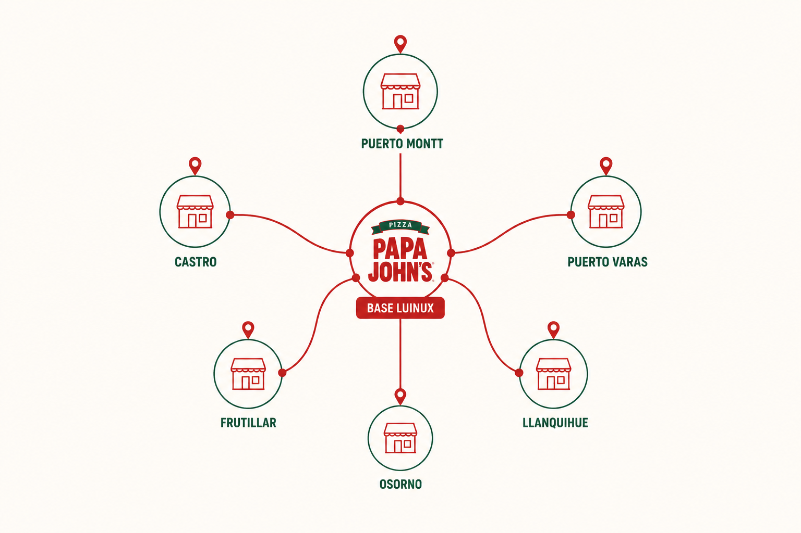

Papa John’s clásico (Base de operaciones Luinux)
Hogar del mítico Papayón de los Notros, este local constituye la Base de Operaciones Luinux. Su ubicación estratégica cerca de la casa del Benja y del Andrés la base ideal.
Turismo gastronómico en la X Región
Una experiencia ficticia de turismo urbano que conecta pizza, viaje, fotografía y lugares icónicos del sur de Chile.
Ver más
PapaRuta Los Lagos es una plataforma turística que invita a descubrir locales de Papa John’s en la Región de Los Lagos como puntos de encuentro para viajeros, estudiantes y familias.
Hogar del mítico Papayón de los Notros, este local constituye la Base de Operaciones Luinux. Su ubicación estratégica cerca de la casa del Benja y del Andrés la base ideal.

Una parada gastronómica ideal para iniciar o cerrar un recorrido por Chiloé.

Propuesta pensada para visitantes que buscan comida rápida, accesible y reconocible.
Nos complace ayudar a familias a encontrar su lugar y ser uno con Papa John's